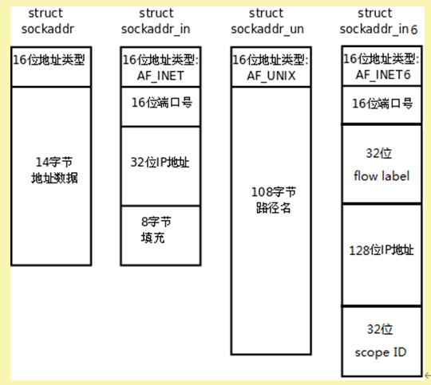

03. 预备知识
IP地址转换函数
早期：
#include <sys/socket.h> #include <netinet/in.h> #include <arpa/inet.h> int inet_aton(const char *cp, struct in_addr *inp); in_addr_t inet_addr(const char *cp); char *inet_ntoa(struct in_addr in); 只能处理IPv4的ip地址 不可重入函数 注意参数是struct in_addr
现在：
#include <arpa/inet.h>
int inet_pton(int af, const char *src, void *dst);
const char *inet_ntop(int af, const void *src, char *dst, socklen_t size);
支持IPv4和IPv6
可重入函数
其中inet_pton和inet_ntop不仅可以转换IPv4的in_addr，还可以转换IPv6的in6_addr。
因此函数接口是void *addrptr。
sockaddr数据结构
strcut sockaddr 很多网络编程函数诞生早于IPv4协议，那时候都使用的是sockaddr结构体,为了向前兼容，现在sockaddr退化成了（void *）的作用，传递一个地址给函数，至于这个函数是sockaddr_in还是sockaddr_in6，由地址族确定，然后函数内部再强制类型转化为所需的地址类型。
可参看 man 7 ip。
地址格式定义在netinet/in.h，IPv4地址用sockaddr_in结构体表示。

标签：无